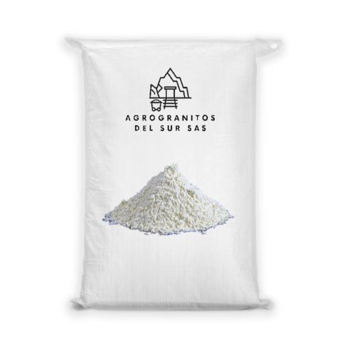
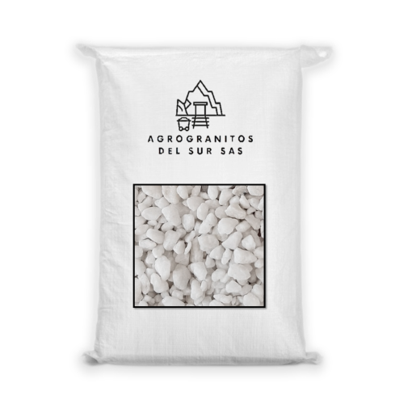
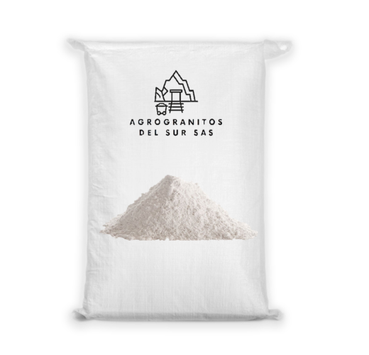
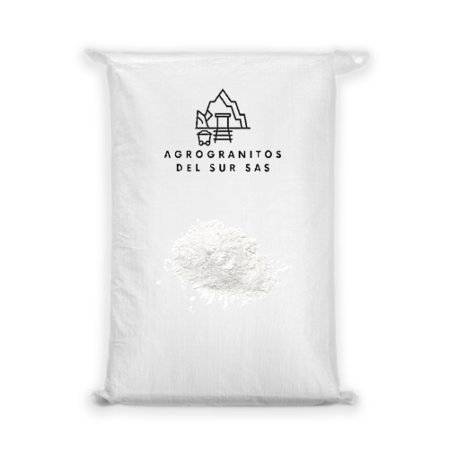
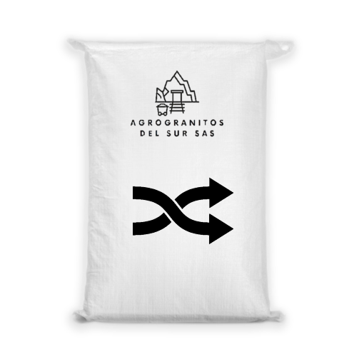

Nuestros Productos

Carbonato de calcio

Granitos

Yeso agricola

Cal agricola

Cal dolomita

Agro granitos del Sur S.A.S, es una empresa Huilense, dedicada a la producción y comercialización de fertilizantes Inorgánicos extraídos de yacimientos 100 % naturales utilizados para Enmienda de suelos con problemas de pH y Acondicionadores de suelos con problemas de Sodio etc.
Somos una empresa Huilense, dedicada a la producción de Minerales para el Agro y la Industria Colombiana. Extrayendo los mejores insumos de las minas de la Región, para obtener productos de alta calidad. Comprometidos siempre con el cuidado del medio ambiente.